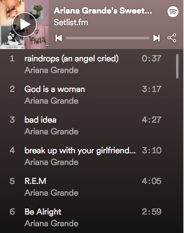

hobbies is about enjoyable things that I enjoy doing to divert myself from the difficulties of life. Even when my life is going through a difficult period, I may find solace and fulfilment in my hobbies. here are few of my hobbies, among of them is listen to music, reading, watch movies and drama, food hunting and playing games.
When my mind is racing and I simply want to block out everything around me, music provides the essential respite. They keep me company through the difficult times. As a result, it may be combined with other interests. For example, I enjoy reading a good book while listening to excellent symphonic music in the background.Another beauty of music is that it is global. It's worth listening to if it makes me feel happy. When it comes to music, I'm naturally open-minded. I have a huge music collection that spans various genres.here some of my favourite song that i usually listen during my leasure time.


I am also a big reader. Even though I enjoy watching movies and listening to music, reading books is my favourite pastime. I like reading for a variety of reasons. The reason is that it provides me with a sense of fulfilment. That is, books revitalise me. After finishing a book, I feel like a whole different person, and my perspective on life shifts. Books sharpen my mind. It is a well-known fact that reading strengthens our brain muscles. It helps us think more clearly and make better decisions. I find it amusing that every time I repeat a smart phrase from a book, everyone around me seems taken aback.
My favourite pastime is watching movies. When I have leisure time, I enjoy viewing various types of movies. On the one hand, viewing movies is a pleasurable pastime; on the other, it is educational. There are several social platforms where I can quickly view a movie or rent one and enjoy it. If I watch an instructional film in my spare time, I will learn a lot of new stuff. Movies provide me with entertainment while also providing me with education. same goes to drama. most drama i watch is korea.

When it came to eating, I was really picky. I am willing to sample any dish in the world, but only if it is halal. The prices might be a little high at times, but I will try the meal. My favourite foods that I've tried are nasi ayam, laksa siam, laksa johor, and laksa kedah. most of it i try from their origin places. It's a wonderful thing that I can always find new halal meals to try on social media.


i aslo enjoy playing games. it help me release stress. here games i play.